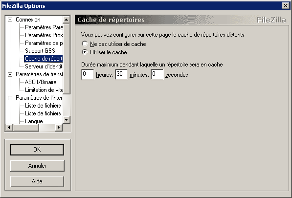

Cache des Répertoires
Vue d'Ensemble
Le cache des répertoires de FileZilla est une fonction très puissante. Il stocke tous les répertoires que vous avez visité sur le serveur, de telle sorte que FileZilla n'aura pas à récupérer la liste du répertoire auprès du serveur la prochaine fois que vous voudrez afficher le même répertoire. C'est particulièrement utile lorsque vous parcourez un répertoire à structure complexe sur le serveur.
Quand le cache de répertoires est activé, il est également possible de parcourir les répertoires déjà visités pendant le transferts des fichiers, de sorte que vous pouvez mettre les fichiers en file d'attente pour téléchargement pendant que le transfert est en cours.

Les trois champs de texte de la page de la boîte
de dialogue contrôlent la durée pendant laquelle le répertoire restera
en cache. Quand cette durée est dépassée, le répertoire sera
purgé du cache.
Si vous réglez cette valeur à un niveau trop élevé,
vous ne pourrez pas constater de changement sur le serveur, comme les nouveaux
fichiers ou les fichiers modifiés.
En outre, si ce réglage est trop bas, le cache deviendra inutile du fait
que son contenu sera purgé trop tôt et que vous ne pourrez pas
parcourir ce serveur pendant le transfert si vous avez désactivé
Utiliser les connexions multiples.